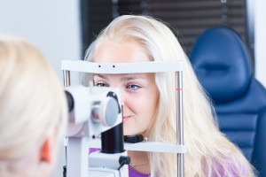
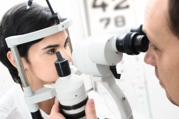

<?xml version="1.0" encoding="UTF-8"?><rss version="2.0"
	xmlns:content="http://purl.org/rss/1.0/modules/content/"
	xmlns:wfw="http://wellformedweb.org/CommentAPI/"
	xmlns:dc="http://purl.org/dc/elements/1.1/"
	xmlns:atom="http://www.w3.org/2005/Atom"
	xmlns:sy="http://purl.org/rss/1.0/modules/syndication/"
	xmlns:slash="http://purl.org/rss/1.0/modules/slash/"
	>

<channel>
	<title>Eye Doctor &#8211; Optometrist in Annapolis</title>
	<atom:link href="http://annapolis.eyefitvisioncenters.com/eyeglasses/Annapolis/eye-doctor/feed/" rel="self" type="application/rss+xml" />
	<link>http://annapolis.eyefitvisioncenters.com/eyeglasses</link>
	<description>eye doctor &#124; eye exam &#124; eyeglasses frames</description>
	<lastBuildDate>Fri, 25 Mar 2016 18:25:12 +0000</lastBuildDate>
	<language>en-US</language>
	<sy:updatePeriod>hourly</sy:updatePeriod>
	<sy:updateFrequency>1</sy:updateFrequency>
	
	<item>
		<title>Annapolis Eye Doctor</title>
		<link>http://annapolis.eyefitvisioncenters.com/eyeglasses/annapolis-eye-doctor/</link>
		<pubDate>Tue, 15 Dec 2015 21:34:45 +0000</pubDate>
		<dc:creator><![CDATA[pjdhanoa]]></dc:creator>
				<category><![CDATA[Annapolis]]></category>
		<category><![CDATA[Eye Doctor]]></category>
		<category><![CDATA[annapolis]]></category>
		<category><![CDATA[eye doctor]]></category>
		<category><![CDATA[full vision exam]]></category>
		<category><![CDATA[glaucoma care]]></category>
		<category><![CDATA[serious condition]]></category>
		<category><![CDATA[signs of glaucoma]]></category>

		<guid isPermaLink="false">http://annapolis.eyefitvisioncenters.com/eyeglasses/?p=56</guid>
		<description><![CDATA[21401 eye care If you are experiencing blurry vision, it is vital you visit your eye doctor to ensure your eyes are in good health, and that it is not an underlying symptom of a more serious condition. Although your blurry vision may be due to something as simple as general near- or far-sightedness, it [&#8230;]]]></description>
				<content:encoded><![CDATA[<h1 style="text-align: justify;"><a href="http://eyefitvisioncenters.com">21401 eye care</a></h1>
<div id="attachment_57" style="width: 310px" class="wp-caption alignleft"><a href="../../../wp-content/uploads/2015/12/841472_l.jpg" rel="attachment wp-att-57"></a><p class="wp-caption-text">Annapolis eye doctor</p></div>
<p style="text-align: justify;">If you are experiencing blurry vision, it is vital you visit your eye doctor to ensure your eyes are in good health, and that it is not an underlying symptom of a more serious condition. Although your blurry vision may be due to something as simple as general near- or far-sightedness, it could also be the early signs of glaucoma. A visit to your <a href="http://eyefitvisioncenters.com">Annapolis eye doctor</a> at EyeFit Vision Centers for glaucoma screening and eye care will help determine and treat whatever the cause of your blurred vision may be.</p>
<p style="text-align: justify;">Glaucoma, the leading cause of blindness and visual impairment in the United States, is an eye disease that can lead to a permanent loss of vision. Actually, glaucoma is not just one eye disease, but a group of eye conditions resulting in optic nerve damage, which causes loss of vision. Abnormally high pressure inside your eye (intraocular pressure) usually, but not always, causes this damage. We provide all diagnostic and treatment options for glaucoma care, including glaucoma screening in. Glaucoma generally provides no warning signs or symptoms of disease, making testing an important part of a full vision exam. If it is determined that you do suffer from glaucoma, our Annapolis eye doctor will discuss which treatment plan is best for your individual needs. Glaucoma can be treated with eye drops, pills, laser surgery, traditional surgery, or a combination of these methods. The goal of any treatment is to prevent loss of vision, as vision loss from glaucoma is irreversible. Surgery can be an incredibly effective treatment option for your eye disease. Laser treatments, for example, can be utilized for precise treatment and quick healing. However, it is best to consult our doctors first to best decide on a treatment plan right for you.</p>
<p style="text-align: justify;">Early diagnosis and treatment can minimize or prevent optic nerve damage and limit glaucoma-related vision loss. It&#8217;s important to get your eyes examined regularly, and make sure your eye doctor measures your intraocular pressure. So even if your vision is blurry, it is clear where you should go for your glaucoma testing and treatment; call EyeFit Vision Centers today to schedule an appointment with one of our <a href="http://eyefitvisioncenters.com">Annapolis eye doctor</a>.</p>
<h3 style="text-align: justify;"><a href="http://eyefitvisioncenters.com">2321 Forest Drive</a><br />
<a href="http://eyefitvisioncenters.com">Annapolis, MD 21401</a><br />
<a href="http://eyefitvisioncenters.com">Phone:(410) 266-3369</a></h3>
]]></content:encoded>
			</item>
		<item>
		<title>Eye exam in Annapolis</title>
		<link>http://annapolis.eyefitvisioncenters.com/eyeglasses/eye-exam-in-annapolis/</link>
		<pubDate>Mon, 16 Nov 2015 15:13:53 +0000</pubDate>
		<dc:creator><![CDATA[pjdhanoa]]></dc:creator>
				<category><![CDATA[Annapolis]]></category>
		<category><![CDATA[Eye Doctor]]></category>
		<category><![CDATA[21401 Eye Exam]]></category>
		<category><![CDATA[Annapolis Eye Exam]]></category>
		<category><![CDATA[comprehensive eye exam]]></category>

		<guid isPermaLink="false">http://annapolis.eyefitvisioncenters.com/eyeglasses/?p=52</guid>
		<description><![CDATA[Annapolis eye testing Are you thinking about getting contact lenses for the first time? Or do you already wear contacts but know that it is time that you had a new comprehensive contact lens fitting and eye exam? When you need a contact lens eye exam in Annapolis, you will do well to come to [&#8230;]]]></description>
				<content:encoded><![CDATA[<h2><a href="../../../../index.html">Annapolis eye testing</a></h2>
<div id="attachment_53" style="width: 310px" class="wp-caption alignleft"><a href="../../../wp-content/uploads/2015/11/1-2.jpg"></a><p class="wp-caption-text">Eye exam in Annapolis</p></div>
<p style="text-align: justify;">Are you thinking about getting contact lenses for the first time? Or do you already wear contacts but know that it is time that you had a new comprehensive contact lens fitting and eye exam? When you need a contact lens <a href="../../../../index.html">eye exam in Annapolis</a>, you will do well to come to our practice, EyeFit Vision Centers, for excellent eye care.</p>
<p style="text-align: justify;">At our practice you will be able to have a great contact lens exam and fitting by our expert and highly-skilled optometrist, Dr. Linda Marie Chous. During a contact lens <a href="../../../../index.html">eye exam in Annapolis</a> the health of your eyes will be checked. Then measurements will be taken of your eyes to make sure that the new contact lenses will fit you perfectly. Based on the results of your eye exam our optometrist will be able to write you a contact lens prescription that not only gives information about the contact lens curvature and size, but it will also have information about the needed refractive correction. After the exam is completed our optometrist will also be able to discuss with you the types and brands of lenses that will work best for you. You will also be able to order your new contact lenses directly from our practice.</p>
<p style="text-align: justify;">At our practice, we offer a wide selection of contact lens brands to choose from. After your <a href="../../../../index.html">eye exam in Annapolis</a> our optometrist will help you choose the correct brand that will offer you the best vision correction and the greatest comfort. Included in our list of brands are: Acuvue 1-Day Moist; Acuvue 1-Day Trueye; Acuvue 2; Acuvue 2 Enhancer Color; Acuvue Advance for Astigmatism; Acuvue Advance Plus; Acuvue Bifocal; Acuvue Oasys; Acuvue Oasys for Astigmatism; Acuvue Oasys for Presbyopia; Air Optix Aqua; Air Optix Aqua Multifocal; Air Optix for Astigmatism; Air Optix Night &amp; Day; Avaira.; Biofinity; Biofinity Toric; Biomedics 55; Biomedics Toric; Biomedics XC; Focus Dailies Aqua Release; Focus Dailies Toric; Frequency 55 Aspheric; Frequency 55 Toric; Freshlook Color Blends; Proclear; Proclear Multifocal; Purevision; Purevision 2 HD; Purevision Multifocal; Purevision Toric; Soflens 38; Soflens 66 Toric; and Soflens Multifocal. If you would like to meet with our optometrist for a contact lens exam in Annapolis, contact us for an appointment.</p>
<h3 style="text-align: justify;"><a href="../../../../index.html">EyeFit Vision Centers</a><br />
2321 Forest Drive<br />
Annapolis, MD 21401<br />
Phone:(410) 266-3369</h3>
]]></content:encoded>
			</item>
		<item>
		<title>Annapolis Vision Center</title>
		<link>http://annapolis.eyefitvisioncenters.com/eyeglasses/annapolis-vision-center/</link>
		<pubDate>Tue, 29 Sep 2015 00:24:27 +0000</pubDate>
		<dc:creator><![CDATA[pjdhanoa]]></dc:creator>
				<category><![CDATA[Annapolis]]></category>
		<category><![CDATA[Eye Doctor]]></category>
		<category><![CDATA[21401 Eye Exam]]></category>
		<category><![CDATA[annapolis]]></category>
		<category><![CDATA[Annapolis Eye Exam]]></category>
		<category><![CDATA[eye exam]]></category>
		<category><![CDATA[Eye Exam 21401]]></category>
		<category><![CDATA[Eye Exam Annapolis]]></category>

		<guid isPermaLink="false">http://annapolis.eyefitvisioncenters.com/eyeglasses/?p=41</guid>
		<description><![CDATA[21401 Eye Exam People of all ages need to have eye exams. Whether we are talking about a young child, adult, or senior, it is important that comprehensive eye exams are performed on a regular basis. While every age group has its own eye care challenges, our optometrist will be able to help each individual [&#8230;]]]></description>
				<content:encoded><![CDATA[<h2><a href="../../../../index.html">21401 Eye Exam</a></h2>
<div id="attachment_42" style="width: 310px" class="wp-caption alignleft"><a href="../../../wp-content/uploads/2015/09/1-10.jpg"></a><p class="wp-caption-text">Annapolis Vision Center</p></div>
<p>People of all ages need to have eye exams. Whether we are talking about a young child, adult, or senior, it is important that comprehensive eye exams are performed on a regular basis. While every age group has its own eye care challenges, our optometrist will be able to help each individual receive the eye care that they need. If you want to see an optometrist who can provide you and family members with comprehensive eye exams, you will do well to visit us at our <a href="../../../../index.html">Annapolis vision center</a>, EyeFit Vision Centers.</p>
<p>At our practice, you will be able to see an expert optometrist who will be able to give you a complete eye exam, or complete contact lens exam. If any diseases or disorders of the eye show up during the exam, our optometrist will either be able to treat the problem or refer you to an expert ophthalmologist for more involved medical care. Eye examinations are important at every age as there are serious eye problems that can develop at any point in your life. During a regular eye exam there will be a lot of testing done to uncover any possible eye problems. However, we want to assure you that you will be totally comfortable during the entire exam. There is no need for worry or concern when you get an eye exam at our <a href="../../../../index.html">Annapolis vision center</a>.</p>
<p>During a comprehensive eye exam many tests are performed. Your eyes will be checked to see if there are any refraction problems such as nearsightedness, farsightedness or astigmatism. Your eyes will be screened for a variety of problems including: glaucoma; cataracts; retinal problems; macular degeneration; or other problems of the eye. Regularly scheduled eye exams are so important because many eye problems do not have any obvious symptoms until vision has already been lost. For example, glaucoma has very few noticeable symptoms in the early stages. However, glaucoma can already be starting to gradually steal your sight. Once this disease is properly diagnosed it can be treated and most likely be kept at bay with continuous treatment. There is no need to lose any sight to this disease. However, if glaucoma is not diagnosed until a later stage, it is more difficult to treat. Also, any vision that has already been lost will not be able to be restored. Our <a href="../../../../index.html">Annapolis vision center</a> wants everyone to be able to keep their precious vision, and for that reason we encourage all to have regularly scheduled eye exams. If you would like to make an appointment to meet with one of our fine optometrists, contact us today at EyeFit Vision Centers to make an appointment.</p>
<h3><a href="../../../../index.html">2321 Forest Drive</a><br />
Annapolis, MD 21401<br />
Phone:(410) 266-3369</h3>
]]></content:encoded>
			</item>
		<item>
		<title>Eye Exams in Annapolis</title>
		<link>http://annapolis.eyefitvisioncenters.com/eyeglasses/eye-exams-in-annapolis/</link>
		<pubDate>Fri, 17 Apr 2015 17:59:43 +0000</pubDate>
		<dc:creator><![CDATA[pjdhanoa]]></dc:creator>
				<category><![CDATA[Annapolis]]></category>
		<category><![CDATA[Eye Doctor]]></category>
		<category><![CDATA[Optometrist]]></category>
		<category><![CDATA[Uncategorized]]></category>
		<category><![CDATA[annapolis]]></category>
		<category><![CDATA[Eye Exams]]></category>
		<category><![CDATA[optometrist]]></category>

		<guid isPermaLink="false">http://annapolis.eyefitvisioncenters.com/eyeglasses/?p=23</guid>
		<description><![CDATA[Annapolis Optometrist Here at EyeFit Vision Centers, our eye exams in Annapolis are some of our most important services offered. They may seem simple, but that does not take away how crucial eye exams are to maintaining good eye health, and good health in general. Many people do not realize that your eyes are more [&#8230;]]]></description>
				<content:encoded><![CDATA[<h1><a href="../../../../index.html">Annapolis Optometrist</a></h1>
<div id="attachment_24" style="width: 310px" class="wp-caption alignleft"><a href="../../../wp-content/uploads/2015/04/841472_l.jpg"></a><p class="wp-caption-text">Eye Exams in Annapolis</p></div>
<p>Here at EyeFit Vision Centers, our <a href="../../../../index.html">eye exams in Annapolis</a> are some of our most important services offered. They may seem simple, but that does not take away how crucial eye exams are to maintaining good eye health, and good health in general. Many people do not realize that your eyes are more than just the “windows to your soul,” as the saying goes, and that they too are the windows to the health of other areas of your body. Symptoms in your eyes and vision can be indicative of a wide range of health issues, including and excluding specifically eye and vision-related problems. In addition, it is important to visit us for eye exams in Annapolis due to the nature in which most eye problems develop: slowly. Many potentially serious eye conditions develop so gradually that it can be difficult to notice the subtle changes that occur in your vision or eye health as a result. The danger of this is that many people are unaware that they have a problem until the symptoms have built up and already done real damage. In order to avoid this, it is best to visit us for eye exams in Annapolis at a frequency recommended by the professionals here at EyeFit Vision Centers. When you choose to get your <a href="../../../../index.html">eye exams in Annapolis</a> with us, you can trust that you will get the fullest evaluation of your eye and vision health thanks to our expert eye care professionals, our state-of-the-art facility, and the reliable and informative testing methods that we use. We also offer a wide range of additional eye care services that we can recommend as they are needed.</p>
<p>If you would like to learn more about what our <a href="../../../../index.html">eye exams in Annapolis</a> entail, or if you are interested in reading up on any of the other various eye care services and products available to you here at EyeFit Vision centers, we highly recommend that you visit our practice’s main informative website, which contains a wealth of detailed information that could prove useful to you. If you have any remaining questions or concerns that we can address, please feel free to contact the staff here directly.</p>
<aside id="text-2" class="widget widget_text">
<div class="textwidget">
<h2><a href="../../../../index.html">Eye Testing in Annapolis</a><br />
2321 Forest Drive<br />
Annapolis, MD 21401<br />
Phone: 410.266.3369</h2>
</div>
</aside>
]]></content:encoded>
			</item>
		<item>
		<title>Eye Doctor Annapolis</title>
		<link>http://annapolis.eyefitvisioncenters.com/eyeglasses/eye-doctor-annapolis/</link>
		<pubDate>Mon, 23 Feb 2015 22:42:48 +0000</pubDate>
		<dc:creator><![CDATA[pjdhanoa]]></dc:creator>
				<category><![CDATA[Annapolis]]></category>
		<category><![CDATA[Eye Doctor]]></category>
		<category><![CDATA[Optometrist]]></category>
		<category><![CDATA[annapolis]]></category>
		<category><![CDATA[eye doctor]]></category>
		<category><![CDATA[eye exam]]></category>
		<category><![CDATA[optometrist]]></category>

		<guid isPermaLink="false">http://annapolis.eyefitvisioncenters.com/eyeglasses/?p=20</guid>
		<description><![CDATA[Annapolis Best Optometrist At EyeFit Vision Center of of Annapolis, our focus is on you. We get to know your lifestyle, preferences and overall health so that we can tailor your examination and eyewear.  Fashionable or funky? Function versus form? We have what you need. Come see for yourself. It’s about time someone reframed eye [&#8230;]]]></description>
				<content:encoded><![CDATA[<h1>Annapolis Best Optometrist</h1>
<p>At EyeFit Vision Center of of Annapolis, our focus is on you. We get to know your lifestyle, preferences and overall health so that we can tailor your examination and <a title="Eye Doctor Annapolis" href="../../../../index.html">eyewear</a>.  Fashionable or funky? Function versus form? We have what you need. Come see for yourself. It’s about time someone reframed eye care.</p>
<h3>Dr. Deborah Amoroso, O.D.</h3>
<p></p>
<p>Having such a positive contact lens appointment opened Dr. Amoroso’s eyes to a career in optometry.</p>
<p>“Improving someone’s quality of life through their vision is a really great feeling,” says Dr. Amoroso. “Seeing a patient happy after they have an exam is my favorite part of the job.”</p>
<p>Dr. Amoroso graduated Magna Cum Laude from Cedar Crest College in Allentown, Pennsylvania before going on to the Ohio State College of Optometry. After school, she went on to work as a primary eye care doctor in Maine, South Carolina and Georgia before joining the EyeFit team.</p>
]]></content:encoded>
			</item>
	</channel>
</rss>

<!-- Dynamic page generated in 0.223 seconds. -->
<!-- Cached page generated by WP-Super-Cache on 2016-04-09 16:35:57 -->

<!-- Localized -->